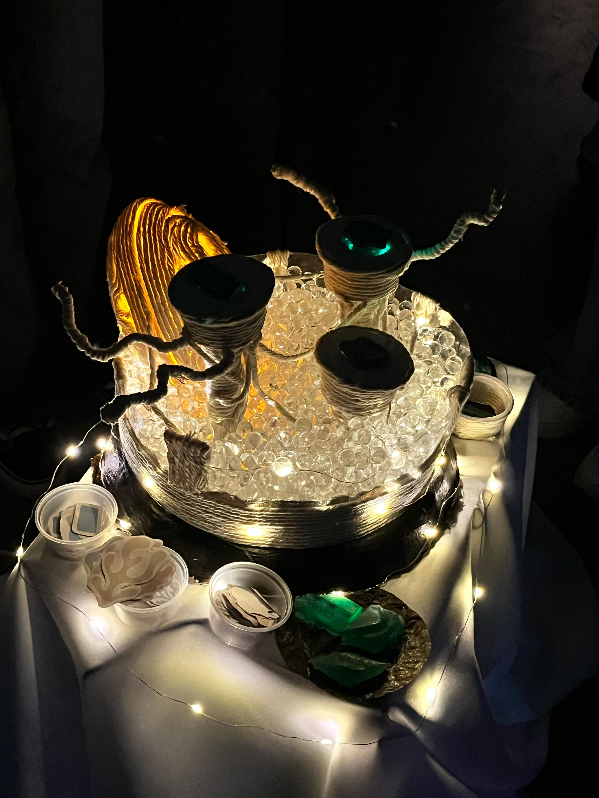
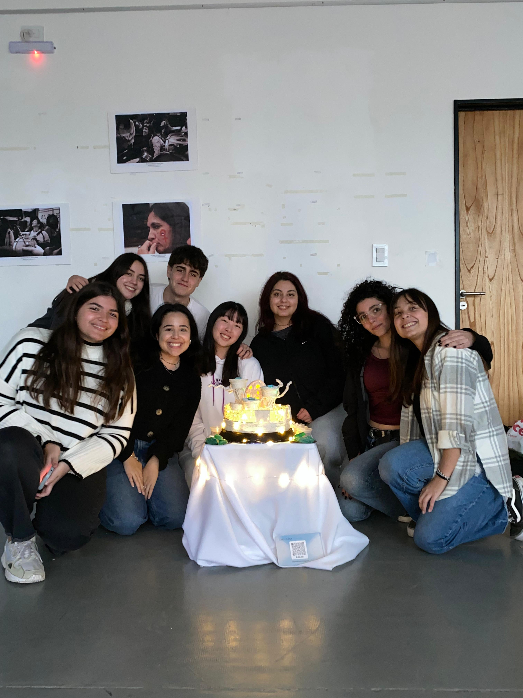

Eudoria
Pieza electrónica multisensorial
- 🎨Rol: Diseño gráfico, electrónica
- 🛠 Herramientas: Arduino, Canva
*Nota: Proyecto conceptual realizado de forma grupal


Creación del universo
En el antiguo mundo, lleno de peleas y conflictos por el territorio, se llegó a una guerra mundial que destruyó gran parte del territorio del planeta tierra, y una gran cantidad de vida humana. Los pocos sobrevivientes se suben a una balsa y navegan sin rumbo hasta que se encuentran con una isla en la que sus habitantes tienen características fisiológicas muy diferentes y cuentan con sistemas tecnológicos nunca antes vistos. Utilizan tubos enormes manejados con el aire para transportarse, las cocinas automatizadas para facilitar el hacer comida. Son seres holísticos, interesados por el crecimiento personal, por lo que se suelen reunir a meditar y siempre cargan sus piedras sagradas para absorber las malas energías. Estos seres aceptaron a los humanos sobrevivientes, con la condición de que elimine lo que los llevo a su destrucción, aprendan a vivir sin limites territoriales, religiosos, etnicos, etc.
Proceso de diseño
Se seleccionó la problemática de la migración para basar nuestro universo en cómo sería un mundo donde el traslado a cualquier parte es legal y sin ningún tipo de restricción.
A través de la historia se creó el moodboard para permitirnos determinar las tradiciones, tipos de comida, acontecimientos culturales y en general, la vida del día a día de los habitantes de Eudoria.
¿En qué consiste la pieza?
La pieza representa a un huevo de los Eudorianos al cual se le deben ubicar los cristales sagrados para que pueda encender su luz y así calentar al feto para que este pueda crecer sano y fuerte.
Proceso de creación
Resultado final
Se realizó una muestra pública en la facultad de artes de la Universidad Nacional de La Plata en la que las personas podían participar en la interacción e inmersión del mundo de Eudoria.